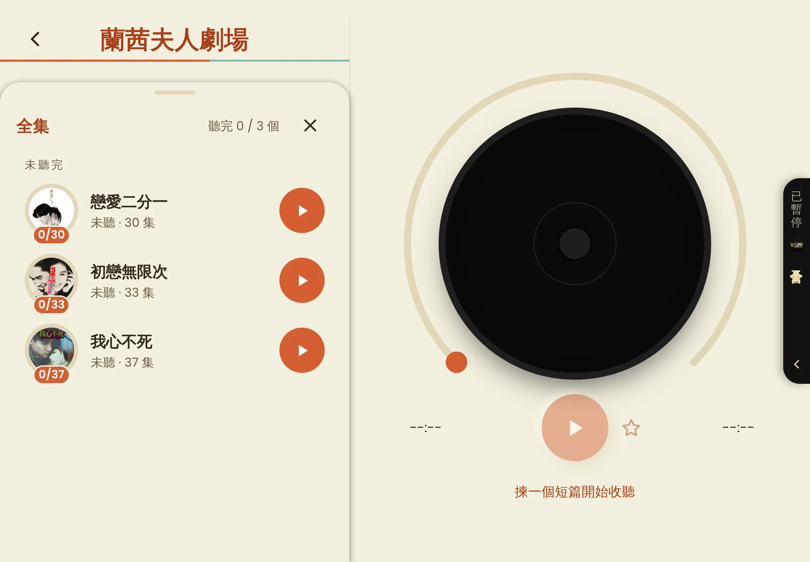
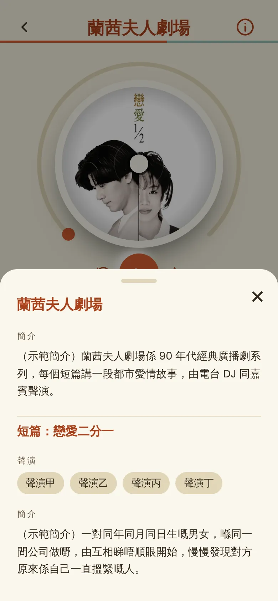
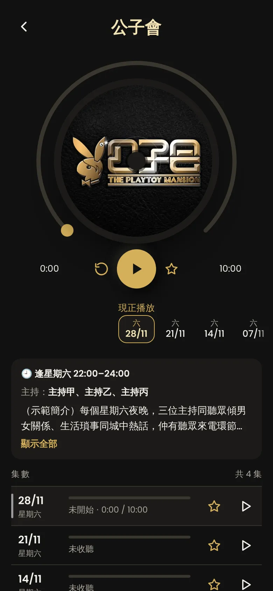
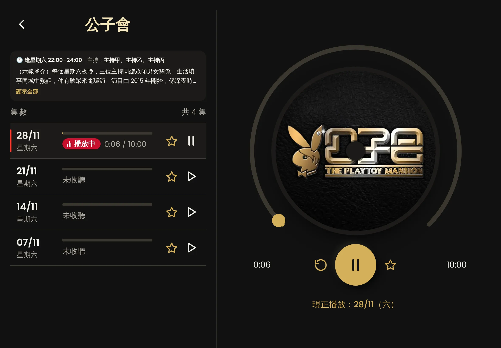

P9.5 #12 節目資料喺 player 點顯示
admin 已可以編 summary / hosts / cast /
airTime，player 未顯示。截圖係真 app 加示範
DOM，文字（主持甲、聲演甲、簡介）全部係示範。
| 頁面 | 有咩資料（catalog schema） |
|---|---|
| 節目頁 | 簡介、主持、播放時間（airTime + airDays） |
| 短篇劇（例：蘭茜夫人劇場） | 劇集簡介；每個短篇各自簡介 + 聲演 |
| 每日劇（例：18 樓 C 座） | 淨係劇集簡介（schema 冇聲演） |
而家嘅樣（冇資料）


A 頁頭「ⓘ」掣 → 資料 sheet
頁頭右邊加 ⓘ 掣；撳落去由下面彈出 sheet（同「全集」sheet 一樣樣），列播放時間、主持 / 聲演、完整簡介。劇集 sheet 上半係劇集簡介，下半係而家揀緊嗰個短篇。
- 👍 現有版面完全唔郁，播放器同集數清單位置不變
- 👍 長簡介唔使收起，sheet 自己捲
- 👎 要撳先見到，用戶未必知有資料





B 集數清單頂嘅資料卡
「集數」上面加一張卡：第一行播放時間、第二行主持 / 聲演、簡介收起做兩行 +「顯示全部」。 卡喺清單入面，捲清單就捲走。短篇劇有兩張卡：劇集簡介、而家揀緊嘅短篇（轉短篇就換）。
- 👍 一入頁就見到，唔使撳
- 👎 直版清單本身得半頁，卡會再逼細第一屏見到嘅集數
- 👎 短篇劇兩張卡比較長




兩個都一樣嘅規則（之後 grill 確認）
- 冇任何資料：A 唔出 ⓘ 掣；B 唔出卡
- 冇某一項（例如冇主持）：嗰行 / 嗰段唔出，唔寫「未有資料」
- 播放時間：用 catalog
formatAirTime（admin 預覽同一套字） - 今日節目頁、主頁唔加